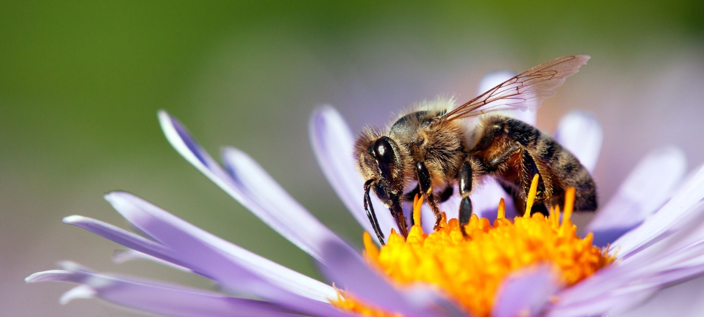

Home Page
Bees have been pollinating our flowers and crops for millions of years, they have surived disease, natural disasters and wars but are now getting hit by the imapacts of climate change.
Bees have been pollinating our flowers and crops for millions of years, they have surived disease, natural disasters and wars but are now getting hit by the imapacts of climate change.